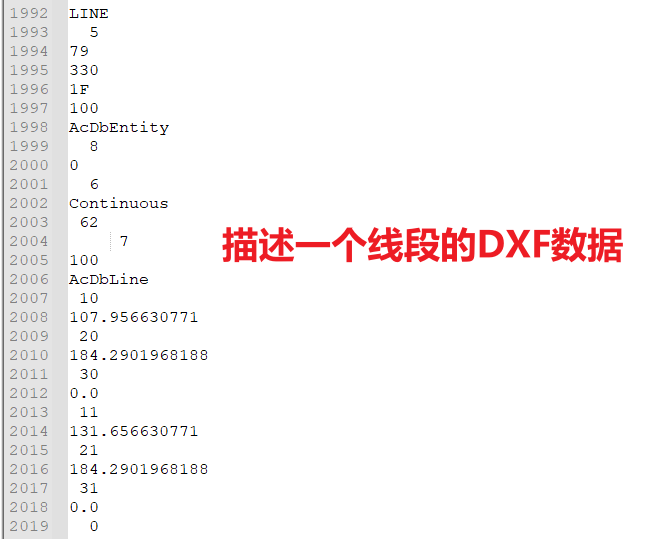
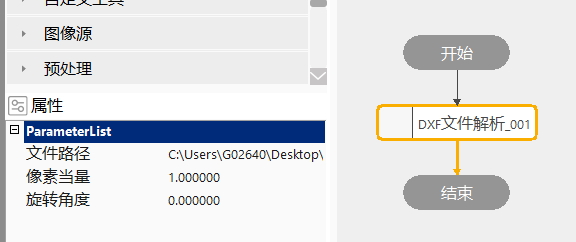
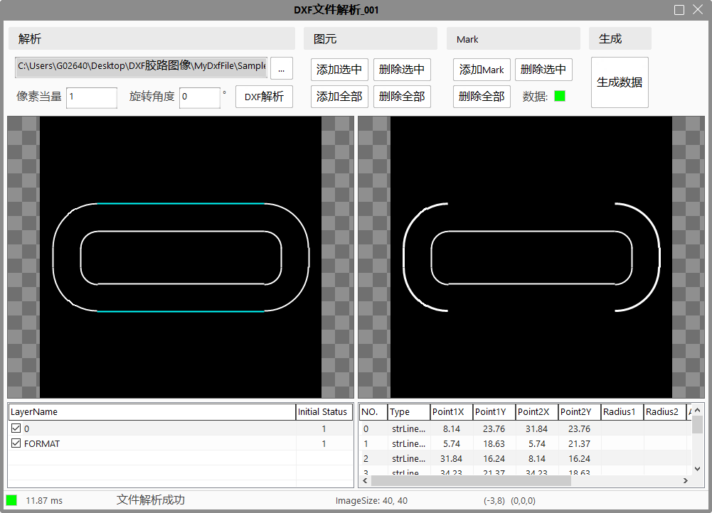
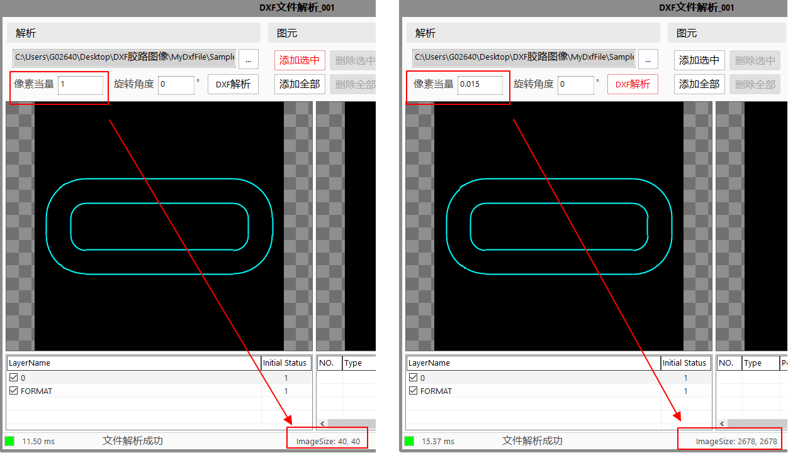
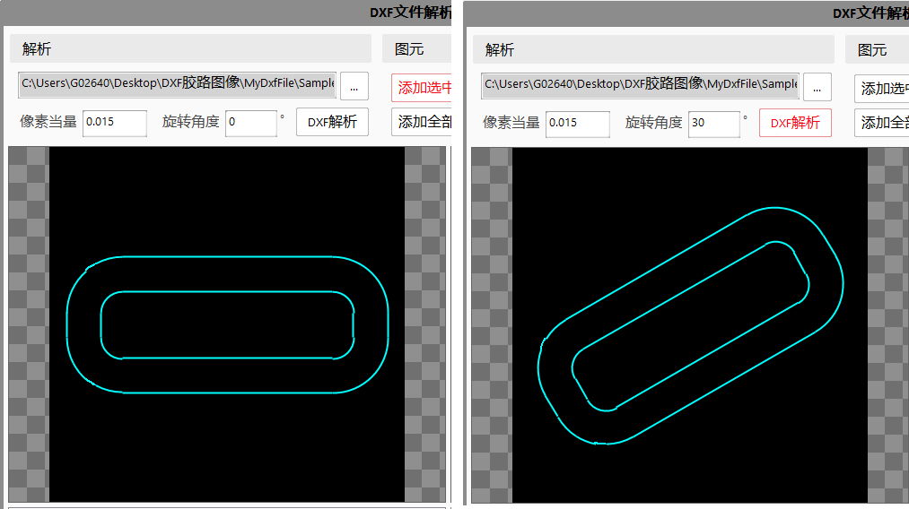
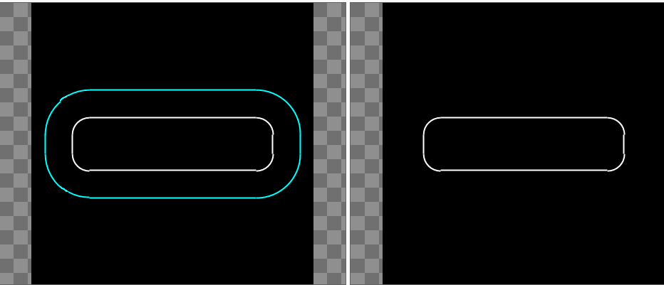
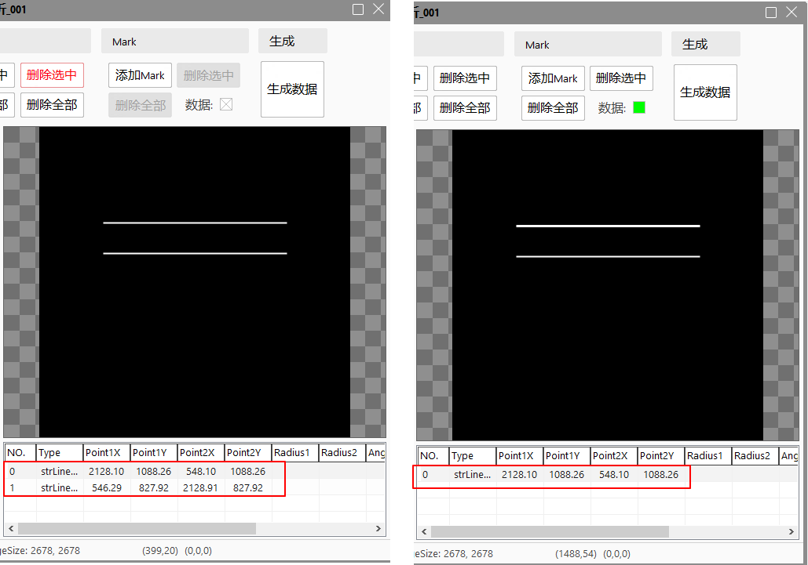
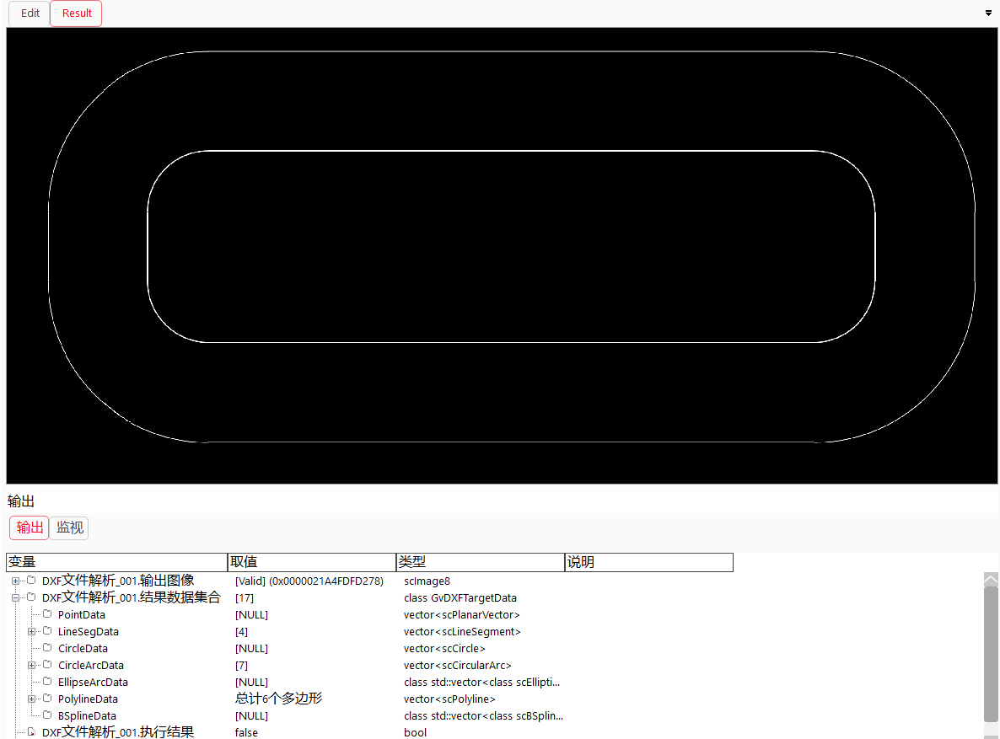
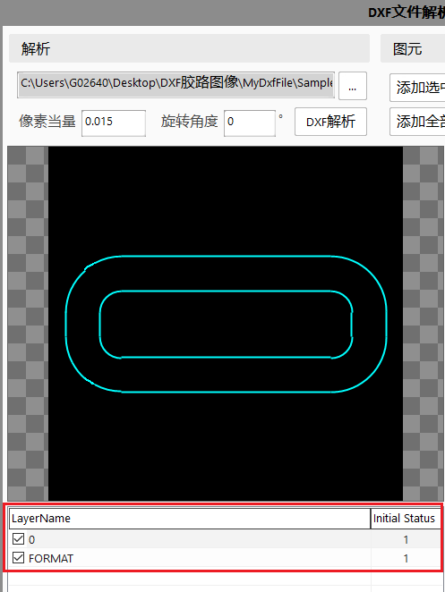
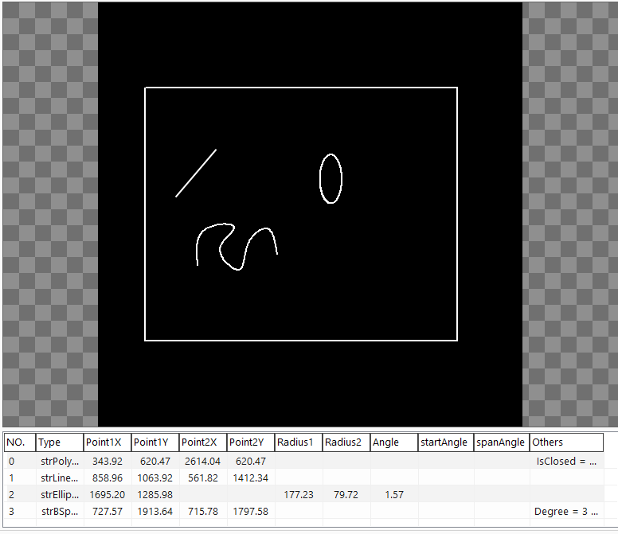

DXF是AutoCAD(Drawing Interchange Format或者Drawing Exchange Format) 绘图交换文件。DXF 是Autodesk（欧特克）公司开发的用于AutoCAD与其它软件之间进行CAD数据交换的CAD数据文件格式。
当第三方软件按照DXF文件格式进行数据解析时，可以得到CAD的绘制图形。本工具的主要目的是将DXF文件解析还原为符合VisionAssembly格式的图形数据，并允许用户对解析的图形进行一定的旋转和缩放，并且可以选择最终将哪些图形添加到要生成的图像中。
将DXF文件解析为图形，并根据用户选择的图形生成对应的数据和图像仅为第一步操作。后续用户可以利用生成的数据进行自己想要的操作，如将某段路径解析生成曲线边宽的检测区域，或者将其作为点胶引导的路径等。
DXF格式是一种标准的格式，任何遵照其定义的语法进行逐行解析的软件，均可以从DXF文件得到其想要的信息。DXF文件为明码文件，即典型的文本查看工具如noteapd++等均可直接查看其内容，典型的DXF文件内容如图1所示。

工具执行流程：设定属性→解析文件→添加图形→添加Mark→生成数据。
属性栏设置如图2，用户可以设置待解析的文件路径，以及解析文件时的像素当量和旋转角度，其具体含义在后面的高级属性界面章节进行详细的说明。

用户可以通过选中工具后右键，选择属性，进入到工具的高级属性界面，如图3所示。

允许用户选择本地磁盘上的DXF文件，当用户在工具的属性栏选择了文件路径后，进入到高级属性界面后，会将其同步过来。
增加像素当量操作和本工具的开发目的息息相关。由于用户在使用CAD绘制图形时，所用的单位为mm。假设某个手机的外轮廓尺寸为150mm * 60mm，那用户在CAD中绘制此手机外轮廓时，就会绘制一个150 * 60的矩形。假设我们按照原始数据解析此文件，并将其展示在图像中，那我们将看到一个150pixel * 60pixel的矩形，会变的很小。
其根本原因在于，在VisionAssembly中所使用的是图像坐标系，而CAD中使用的是真实坐标系，所以需要根据相机标定的像素当量进行数据解析，以便得到的标准图像能够和相机采集到的图像匹配上。如图3所示，使用不同的像素当量进行解析，得到的图像看起来一样，但是其大小是不一样的。

增加旋转角度也和VisionAssembly应用相关。我们知道，我们解析的图像和数据最终是为其它工具服务的。而其它工具输入的图像又是由相机采集得到的。同样，当我们在CAD中绘制手机时，可以横向绘制，也可以纵向绘制，也可以任意角度绘制。当我们将其解析为图像时，如果不增加角度，可能会使我们的标准图像看起来和实际采集的图像差异较大。如图4所示，假设我们要在CAD中绘制一个胶路轨迹，且横向绘制，但是在实际应用中，相机的安装角度和产品本身存在一个30°的夹角，那我们可以在解析时，将旋转角度设置为30，那解析得到图像看起来会和实际图像的一致性更好。

用户可以对解析到的图元进行一定的操作，包括添加选中、删除选中、添加全部、删除全部。其中初始解析的图元均位于左侧视图，初始颜色为青色。当用户选中某些图元后，点击添加选中，则会将选中的图元添加至右侧的视图中，已经被添加的图元颜色变为白色。用户也可以将已经添加的图元选中，点击删除选中，从而将其从右侧视图中删除，被删除的图元在左侧视图中重新还原为青色。添加全部则是将左侧图元中的图元全部添加到右侧图元中，而删除全部则是将右侧视图中的所有图元删除。

Mark操作是针对右侧视图中的图元进行操作。所谓Mark，是指存在于图像，但是不存在于数据中的图像。如图6所示，当用户添加2个线段后，下面的数据列表中会显示2个线段的数据。而当用户将其中一条线段添加为Mark之后，其仍然存在于图像中，但是其数据会从列表中删除。同样，当用户生成数据后，生成的图像中会存在Mark图形，但是工具的输出数据中不存在Mark图像的数据。
增加Mark这一概念，主要是在实际使用过程中，用户感兴趣的图形（如点胶轨迹）位置一般是相对于某个特征来说的，我们往往会将这些特征作为Mark进行输出，但是由于其不是真正的点胶轨迹，所以不应该出现在输出数据中。

当用户完成图元添加和Mark添加后，可以点击生成数据，然后此工具会为用户生成对应的图像和结果数据，如图7所示。

CAD在绘制图形时，可以添加若干图层，并且可以将不同的图形绘制到不同的图层中，且可以通过设置图层的显示和隐藏来控制此图层中所有图形的显示或隐藏。如图8所示，列表的第一列显示的是图层的名称，列表的第二列显示的是图层的初始显示状态，0表示隐藏，1表示显示。用户可以通过点击图层名称前的复选框来决定解析时显示哪些图层。同时，第二列的初始状态显示可以令用户很容易的将图层还原回图层本来的状态（由于用户可能会来回反复点击不同的图层，难免会忘记每个图层的输出状态是什么）。

数据列表用于显示用户添加的图形的真实数据，如图9所示。当用户添加一个线段时，会为其显示线段的起点和终点数据。而当用户添加一个圆时，则会为其显示圆心和半径。但是由于要兼容不同图形的显示，如多边形可能会有无数个点，我们无法将其所有的点都放到表格中一列一列的显示，所以会将多余的点数据串联成一个字符串显示在other列中，用户可以将鼠标放到other列，如果其有数据，则会为用户悬浮显示出所有的内容。

| 注意事项 |
|---|
| 1. 解析失败：用户输入的文件不合法，如将某个非DXF文件的后缀强制改为.dxf，会导致文件解析失败。 |
| 2. 解析失败：另外用户设置的像素当量不合法时，也可能会导致解析失败。由于我们最终解析的图形要放在一个背景为全黑的图像中显示，由于和电脑的配置相关，当要显示的图像超过一定的大小时，会造成图像显示失败，此时会解析失败，且视图中不再显示黑色图像背景。假设用户的电脑在使用VisionAssembly时只能显示45000 * 45000大小的图像，当用户在CAD中绘制了一个尺寸为4500mm * 4500mm的矩形，如果像素当量小于0.1时，则会解析失败，因为像素当量小于0.1时，意味着至少需要的图像尺寸超过45000pixel * 45000pixel。 |
| 3.数据生成失败：当用户进行数据生成时，需要从高级属性界面的显示区域中获取图像和GUI数据，并转移至工具的Result视图中。和问题2原因类似，不同电脑配置可以转移的图像大小不同，当需要生成的图像过大时，可能会造成数据生成失败。 |
| 4.参数建议：由于使用DXF解析文件并生成图像，本质上是要利用生成的图像和图形作为基准，并利用相机采集采集到的图像作为实时图像，来满足视觉应用中的特定场景。所以设置参数时，如像素当量、旋转角度时，尽量按照实际场景设置，以保证软件的正常行为。 |
| 参数名称 | 参数说明 |
|---|---|
| 文件路径 | 要解析的文件路径，后缀格式为.dxf。 |
| 像素当量 | 解析文件时的像素当量，往往是通过相机标定得到的。 |
| 旋转角度 | 解析文件时的旋转角度，此值非精确值，一般可根据产品的实际成像效果进行设置。 |
| 参数名称 | 参数说明 |
|---|---|
| 输出图像 | 通过高级属性界面添加的图形，生成一个灰度图像。 |
| 结果数据集合 | 高级属性界面添加的图形数据。 |
| 执行结果 | 工具执行结果。 |
| 执行时间 | 工具执行时间。 |
参见“\Samples\DXF文件解析工具.gvp”。